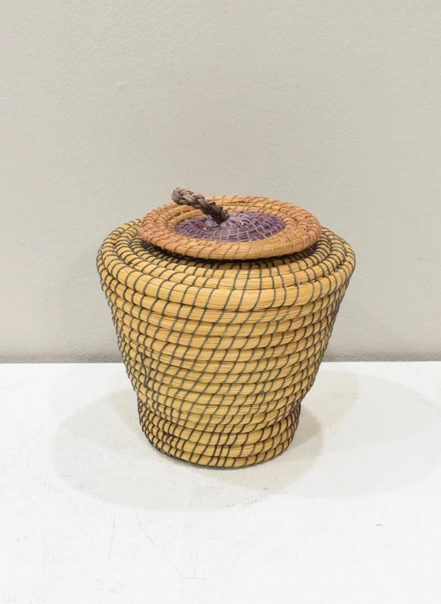
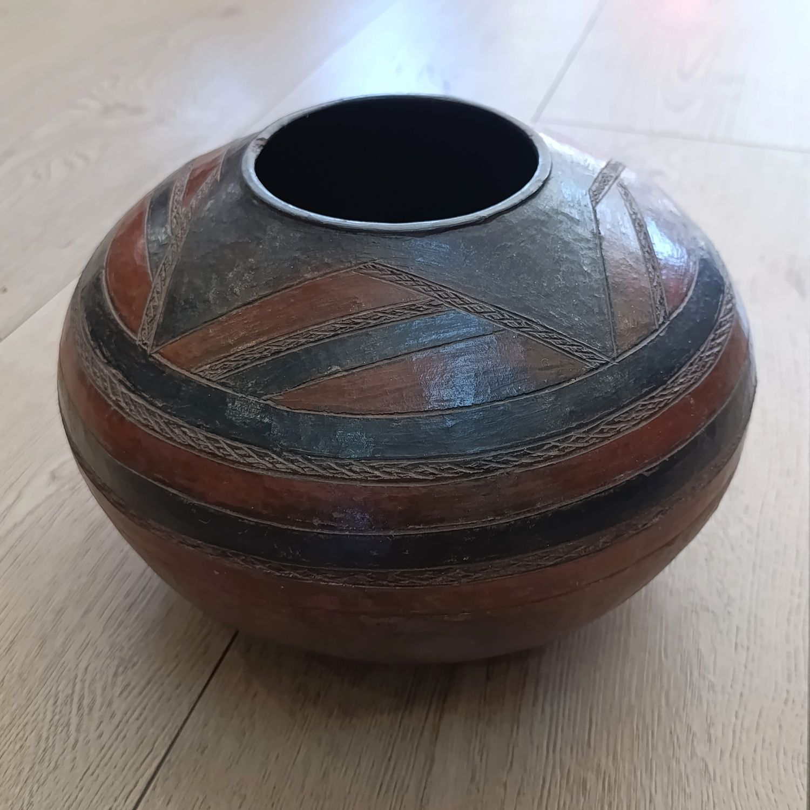
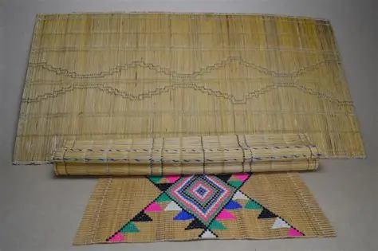

Woven Baskets
Handcrafted from local grasses, Basotho baskets are both decorative and practical, used for carrying grains or as gifts during ceremonies.
Learn more

Traditional Pottery
Pottery plays a vital role in Basotho culture, used for storing food and traditional beer. The designs often tell stories of family and heritage.

Beadwork & Jewelry
Colorful beadwork is used to express beauty, identity, and social status. Each pattern carries a special cultural meaning.

Grass Mats
Woven from local reeds, grass mats are used in homes for sitting, sleeping, and traditional gatherings.